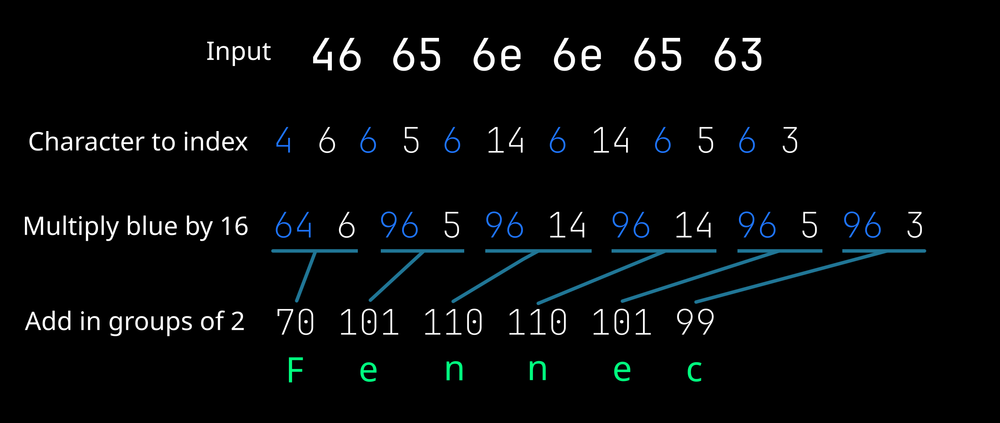
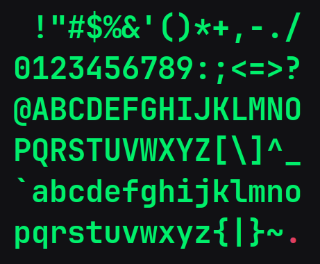
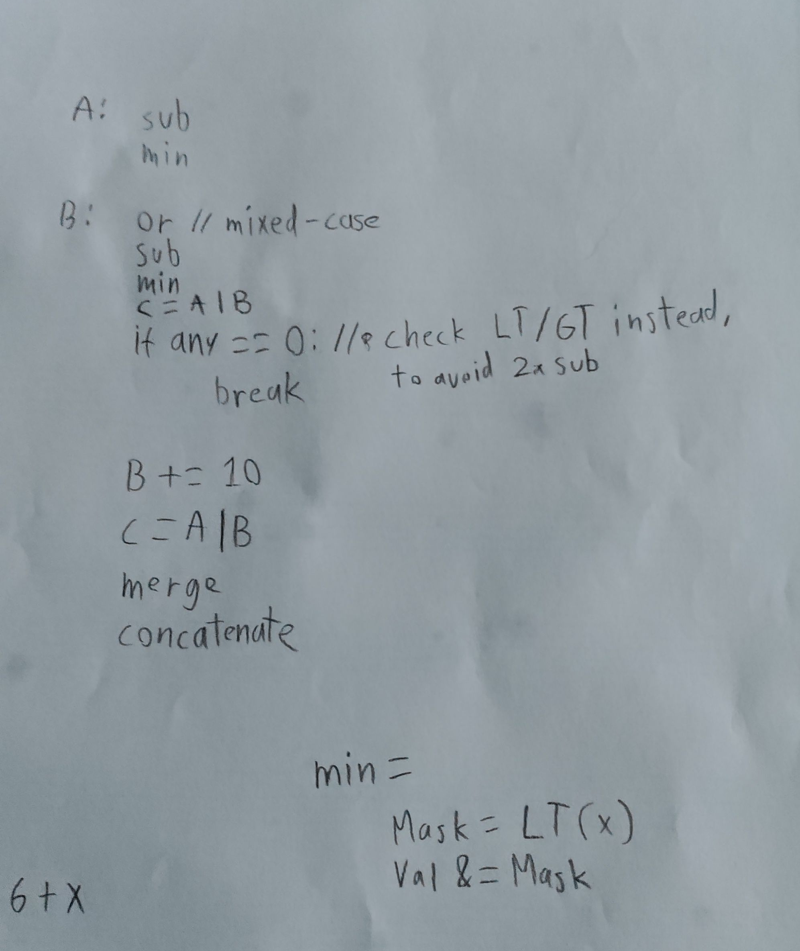

Vectorizing a hex decoder
When you write code like this to sum numbers in a list, you're adding one number at a time conceptually.
int sum(std::vector<int> &numbers) {
int sum = 0;
for (int &num : numbers) {
sum += num;
}
return sum;
}__m128i sum = _mm_setzero_si128();
for (int i = 0; i < numbers.size(); i += 4) {
__m128i nums = _mm_lddqu_si128(reinterpret_cast<__m128i*>(&numbers[i]));
sum = _mm_add_epi32(sum, nums);
}
Ideally, your compiler is smart enough to produce the fast vectorized version without having to write it manually. In this case it most certainly will, but sometimes the problem is not trivial for the compiler to vectorize...
A non-trivial problem
Decoding hexadecimal strings is pretty straight-forward.
Here's my initial implementation in Odin:
for i := 0; i < len(bytes); i += 2 {
a := hex_to_index(bytes[i + 0])
b := hex_to_index(bytes[i + 1])
if (a | b) < 0 {
break
}
// a << 4 | b is equivalent to a * 16 + b in this case
strings.write_byte(&sb, u8(a << 4 | b))
}Implementation
For the implementation, I arbitrarily chose to use 128-bit SIMD instructions. That is 16 bytes at a time, much better than 1!
The first step is to implement the hex_to_index function in SIMD. It takes a hex digit as input, and gives you the value as an integer, returning -1 for invalid digits.

The hexadecimal digits are: 0123456789abcdef
That is two separate contiguous ranges of the ASCII table, meaning we need to handle those two ranges separately.
0123456789
Let's start with the 0123456789 range.
First, let's subtract by the ASCII value of '0'. That way the digits line up with their values.
We want to use a "saturating" subtraction, so that values below 0 will be set to 0.
But now, every character with a value below the '0' character will have the same output of 0!
If we instead subtract by '0' - 1, then every invalid character below '0' will output 0, indicating an invalid digit.
With Odin's incredible simd package, that code looks like this:
a := simd.saturating_sub(data, '0' - 1)
Great! But characters above '9' should be marked invalid aswell...
Since we made 0 the invalid digit indicator, our valid values have been shifted up by 1.
So we want to set values above 10 to 0.
We can do this by checking for a valid value. If the value is less than 11, we want to keep it.
The simd.lanes_lt() instruction outputs a mask with the value 0xFF where this condition holds true.
If we then bitwise-AND the number with this mask, the valid range of '0' to '9' in the input will be kept, while every other input character will output 0.
aMask := simd.lanes_lt(a, 10 + 1) // Less than 11 is 0xFF in the mask
a = simd.bit_and(a, aMask) // Bitwise ANDabcdef
We handle the abcdef range the exact same way as 0123456789.
// 'a' through 'f'
b := simd.saturating_sub(data, 'a' - 1)
bMask := simd.lanes_lt(b, 6 + 1) // 6 is the length of "abcdef"
b = simd.bit_and(b, bMask)Invalid input
b = simd.bit_or(a, b) // Bitwise OR the two input ranges
invalid := simd.reduce_or(simd.lanes_eq(b, 0)) != 0
if invalid {
break
}
If we bitwise-OR the two input ranges, that value will be non-zero for a valid digit.
We use simd.lanes_eq(b, 0) to create a mask with 0xFF in every position where a 0 was found.
Then, simd.reduce_or() returns a single number which is a bitwise-OR of every number in the mask.
That number will be 0xFF if there is any invalid digit in the 16-byte chunk of input text.
Correcting the range
Now that we've skipped any invalid input, we have a lot more freedom to do what we need to.
// Get the value of 'a' through 'f', starting at 11
b = simd.saturating_sub(data, 'a' - 11)
b = simd.bit_or(a, b)
b = simd.sub(b, 1)In this step, we offset the abcdef range by 10, so the whole 0123456789abcdef range is within 1 to 16. Finally, we subtract 1 to obtain the 0 to 15 output range.
Final output!
We have to do something a little weird to multiply every other digit by 16.
left := simd.shuffle(b, b, 0, 2, 4, 6, 8, 10, 12, 14)
left = simd.shl(left, 4) // Multiply by 16
right := simd.shuffle(b, b, 1, 3, 5, 7, 9, 11, 13, 15)
result := simd.bit_or(left, right)
We first produce a list of every even-indexed digit, and left-shift it by 4, which is equivalent to multiplying by 16.
A second list of every odd-indexed digit is then bitwise-OR'd together to produce the final 8-byte output.
Sidenote
Since SIMD operates on a fixed size length of data, I had to leave the final few bytes to my scalar (not vectorized) implementation.
The old implementation handled errors the way I wanted, so I didn't have to come up with a new way to do error handling.
The hex decoder is case-insensitive so that abcdef and ABCDEF both work by abusing an old ASCII trick of bitwise-ORing the input by 0b00100000.
You can find the source code for my final vectorized hex decoder here.
Which problems can be vectorized?
Problems you might solve with threads!
Problems with little to no serial dependency, acting on packed memory such as lists of fixed-size elements can greatly benefit from SIMD.
Where applicable, you can also combine threads with SIMD, if you believe it will perform even better.
Where you might otherwise use threads to speed something up, vectorizing could be a less bug-prone option (with lower latency!).
Do I even need to?
Sometimes, the standard library of your language may come to the rescue.
For example, the C# String.IndexOf() function is implemented with SIMD (since 2018), which can speed up string searching especially if you're replacing a slow function that uses regex.
How do I do this?

If you know a problem can be vectorized, it is helpful to think of the problem in terms of a single element at a time.
Pull out a piece of paper and think through the problem in small steps.
Scroll through the Intel Intrinsics Guide to get an idea of what's possible.
How did you do this?
Computer, Enhance! showed me how to use the Intel intrinsic functions in C++, and taught me a whole bunch of other things!
I prototyped my ideas with Python3, printing every possible input and output for byte values.
Once I thought I had a working solution, I wrote it in C++ before porting it to Odin with its simd package.
The Odin simd package surprised me, it's a much better API than the Intel intrinsics and made it effortless to port.
Google and random Stackoverflow answers helped me when I was stuck, and reading vectorized code has helped me see possibilities I hadn't seen before.
Here are some online examples of using SIMD in C++ code:
spotify-json escaping reserved characters to prevent injection attacks
A vectorized base64 decoder
Thank you for reading!